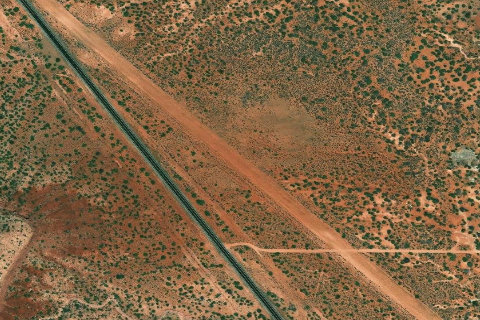

FRY CANYON FLD
UT74 · UT

Aerial imagery source: Esri, Vantor, Earthstar Geographics, and the GIS User Community
| Identifier | UT74 |
|---|---|
| State | UT |
| Runway length | 3,160 ft |
| Runway width | 120 ft |
| Surface | DIRT |
| Runway | 12/30 |
| Elevation | 5,372 ft |
| Ownership | public |
| CTAF | 122.9 |
| Coordinates | 37.64833333, -110.16694444 |
Notes
[ubcp] Description: Fry Canyon would be a great start to your Utah backcountry flying adventures. As one of the longer and wider airstrips in the collection it still offers a great opportunity to explore slot canyons, cliff dwellings, and camp with relative ease. Runway: This runway tends to be soft in the spring and late fall as the frost heaves up the ground. A bit of wind erosion near the base of the grass has made the runway more rough than normal. A little more use and this may correct itself. A important note is an access road crossing the airstrip near the first third landing north but a nice 2,382 feet of airstrip remain after the road. This road has seen increasing activity as the camping and cliff dwellings have grown in popularity and could become more hazardous as ruts deepen. The runway is sloped uphill 1.7% headed to the north. Landings and takeoffs can be accomplished in both directions. If taking off uphill into the wind it may appear your aircraft has reduced performance as the slope of the runway will create this illusion. Approach Considerations: If you have never landed on a upslope runway I can almost guarantee you’ll find yourself low on approach here. A downhill landing is possible but the prevailing winds tend to favor an uphill landing. Plan your touchdown after the access road unless your aircraft performance and skill level allows for short landing distances. Before the road the runway has a few larger shrubs and rocks that need to be considered. There is also a large washout near the west side of the runway running the length of this section. Parking: Large enough for a small fly-in there is no shortage of parking on the south end of the strip. Multiple fire rings can be found here with flat and smooth ground for camping. Some of the ground here is dirt covered rock so plan your tent stakes and tie downs according. No cell phone coverage.